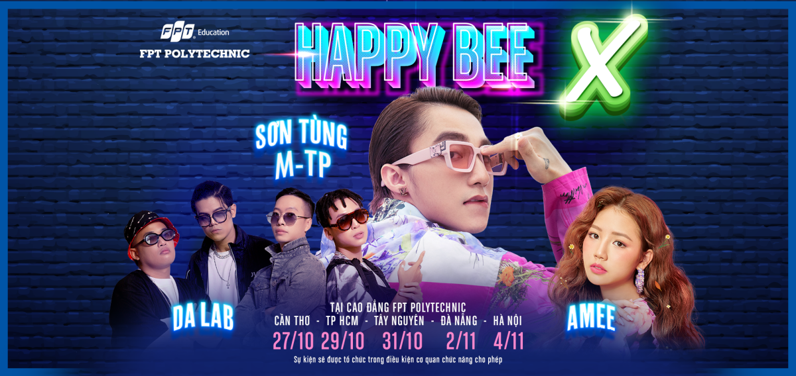
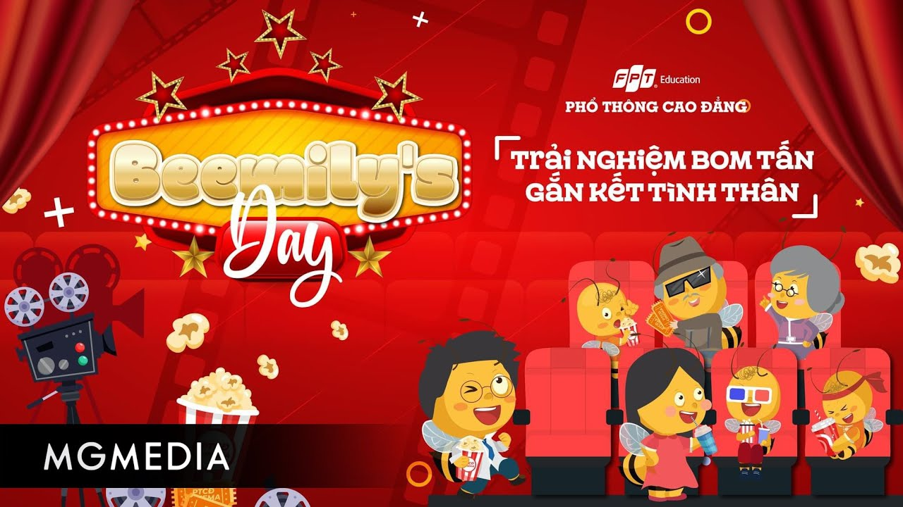

NGÀNH ĐÀO TẠO
SỰ KIỆN
HAPPY BEE
HappyBee là một sự kiện thường niên nổi bật của Phổ thông Cao đẳng FPT, nhằm tạo ra một môi trường năng động, sáng tạo và đầy niềm vui cho học sinh. Đây là dịp để các em có thể giao lưu, học hỏi, phát triển kỹ năng mềm và trải nghiệm những hoạt động ngoại khóa bổ ích.
BEEMILY'S DAY
Sự kiện Beemily's Day ở PTCD FPT là một sự kiện thường niên được tổ chức để tạo ra một môi trường năng động, sáng tạo và vui vẻ cho học sinh. Trong sự kiện này, học sinh có cơ hội giao lưu, học hỏi, và phát triển kỹ năng mềm thông qua các hoạt động ngoại khóa bổ ích. Đây là dịp để thể hiện sự sáng tạo, tinh thần hợp tác và tính cộng đồng của các thành viên trong trường. Beemily Day mang lại không chỉ niềm vui và trải nghiệm đáng nhớ mà còn là cơ hội để thắt chặt tình đoàn kết và tương tác trong cộng đồng học thuật của PTCD FPT.
